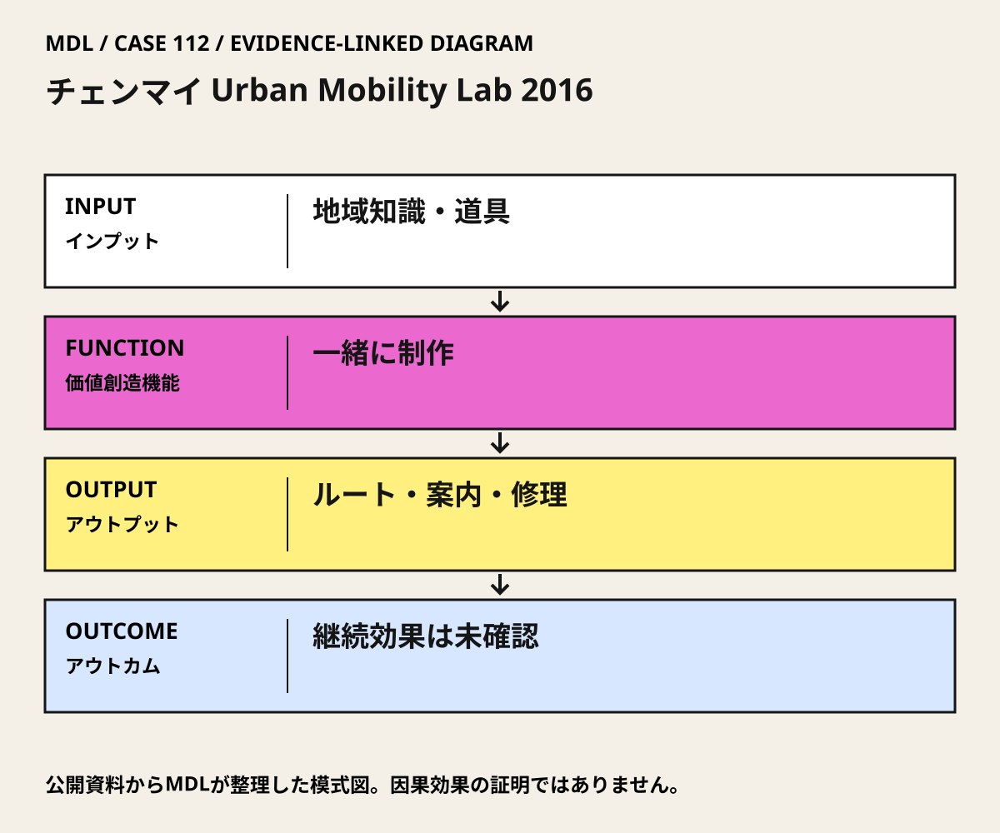

I / INPUT
何を持ち込んでいるか。
活動の出発点となる資源と課題を分けて整理します。「自社」は、その場・制度を運営する組織を指します。
- 自社・運営組織
本人は生活の現場の実験を組織し、若手実務者へ知識を伝える活動だったと説明。
運営者・関係者の報告出典 1- 他社・事業会社
特定企業の資金・設計・施工上の責任は確認していない。
公開資料では未確認- 行政・公共機関
本人記録はTCDCのDesign Weekとの関係を記載。市役所の許可内容・運営責任までは確認できない。
運営者・関係者の報告出典 1- スタートアップ
特定のスタートアップや事業化支援の関与は未確認。
公開資料では未確認- アカデミア
Jittrapiromの専門知識が関わるが、大学が活動の契約・運営主体だったかは未確認。
公開資料では未確認出典 1- 市民・利用者・現場
分野の異なるボランティアと、ルート・案内・修理を利用する参加者。人数や代表性は未確認。
運営者・関係者の報告出典 1
II / VALUE CREATION FUNCTIONS
資源を、どう価値へ変えるか。
以下は既存の8ステップへの編集上の対応づけです。各取り組みの公式な工程名や、全工程を自前で担うことを意味しません。
III / OUTPUT
直接、何が生まれたか。
試作品、データ、契約、標準、育成した人材など、活動から直接生まれたもの。
ルート地図、徒歩・自転車の案内表示、修理活動と発表の記録・写真。
運営者・関係者の報告出典 1
IV / OUTCOME
その結果、何が変わったか。
実際の利用、行動、業務、事業、地域の変化。報告された変化と、当該活動に帰属できる効果は区別します。
活動の組織と現地制作物は本人の記録から確認できる。
運営者・関係者の報告出典 1事故、渋滞、排出、利用者数の変化、案内や修理活動の長期継続は独立資料で未確認。
公開資料では未確認
PROJECT IN FOCUS / 具体的な事例
チェンマイ Urban Mobility Lab 2016
確認できた段階：市民ボランティアの現地実験 調査確認日 2026-10-06
誰の課題を、どう扱ったか
生まれたもの
ルート地図、徒歩・自転車の案内表示、修理活動と発表の記録・写真。
確認できた変化
活動の組織と現地制作物は本人の記録から確認できる。
評価の限界：主根拠は本人ポートフォリオで、活動実績の自己報告。参照するMaaS原著は別研究であり、この活動の効果を裏づけるものではない。参加者の代表性、正式な道路許可、財源、保守責任は確認できていない。
DESIGN BACKWARDS FROM IMPLEMENTATION
社会実装から逆算して、
何を先に整えているか。
実証の先にある導入・運用・継続から、この事例の設計を読み解きます。原典で確認できる仕組みと、MDLの設計解釈・他地域へ応用するための提案を区別して読んでください。「提案」「未実施」と記す内容は、当地で実施済みの工夫ではありません。仕組みの存在と、全案件で成果が出たことも別に扱います。
MORE DETAIL / 運営・根拠・応用
運営の全体像と、学びを深める資料。
費用負担、公表値、応用条件、写真・動画、原典を続けて確認できます。
01どう動かしているのか。
専門分野を越えて集まった人が、使えるルートと現地案内、修理という小さな介入を形にする。若手実務者への知識共有と、都市交通を実際に経験する場を組み合わせる。
意思決定と本人の関与：学習上の判断：地域の実施責任者が、どの場所・案内・修理活動を継続するか、許可、安全、保守の担い手を確かめて決める。2016年の企画後に何が継続決定されたかは未確認。 Peraphan Jittrapiromは本人ポートフォリオでliving lab活動を組織したと記載。市の交通行政全体や恒久道路整備の責任者とは区別する。
- 異分野の担い手を集める
- 案内とルートを形にする
- 修理と現地活動を行う
02誰が負担し、誰が担うか。
活動全体の費用負担者・額は未確認。本人記録によれば自転車修理は工賃無料、部品代は参加者負担。
制度やプログラムの財源と、各参加企業・地域に発生する費用は同じではありません。公開範囲を超える案件別予算・契約条件は未確認です。
03確認できたこと。
04日本で活かすなら。
日本ではイベント時の制作を完成とせず、撤去・保守・許可を先に決める。参加人数より、迷わず使えるか、障害のある人を排除しないか、誰が直し続けるかを測る。
05そのまま真似できないこと。
主根拠は本人ポートフォリオで、活動実績の自己報告。参照するMaaS原著は別研究であり、この活動の効果を裏づけるものではない。参加者の代表性、正式な道路許可、財源、保守責任は確認できていない。
06次に、何を確かめるか。
提案・未実施：地域の交通担当・道路管理者と活動団体が責任者を定め、許可済みの1ルートで30日試行。道迷い、危険箇所、案内の維持時間、修理後の利用継続を測り、現状維持、案内改善、経路変更、修理支援を比較。Continue＝安全と保守主体が両立、Pivot＝読めない案内や利用の偏りを修正、Stop＝道路安全または管理責任を確保できない。
07写真・図と原資料で確かめる。
現場の写真を見る ↑
DIAGRAM: モビリティデザインラボ · 根拠資料 ↗
図の説明
公開資料に基づく模式図。地域知識・道具 → 一緒に制作 → ルート・案内・修理 → 継続効果は未確認。実景や地理的配置を示さない。
2026-10-06 · MDL作成の説明図。第三者の写真・図面の複製ではありません。
冒頭写真：日曜夕市で歩行者空間になるチェンマイ旧市街の通り
原資料で、当時の調査・実践を読む ↗08原典を読む。
Portfolio: Urban Mobility Lab 2016 Chiang Mai, Thailand ↗
本人が活動を組織し、ボランティアがルート・案内・修理を実施したという当事者報告
英語・タイ語。本人の実践記録・写真・本文公開。独立した効果評価ではない。
本人の交通統合を考える原典入口。2016年チェンマイ活動の成果を検証した論文ではない
英語・査読原論文。全文PDF・無料。